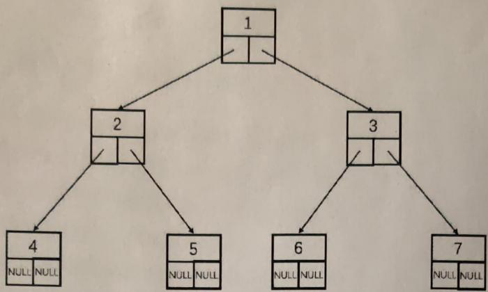

华东师范大学期末试卷（A）2020-2021学年第一学期¶
课程名称：程序设计
专业：数据科学与大数据技术
年级／班级：2020级
课程性质：专业必修
本卷共分三部分，总分为100分。第一部分为20道选择题，共60分。第二部分为5道填空题，共20分。第三部分为3道程序设计题，共20分。
一、选择题（共60分，每题3分）¶
1) 以下哪项不是C语言的特点 ()
A. C语言是面向过程的语言
B. C语言支持结构化编程
C. C语言在程序运行前做类型检查
D. C语言是声明式的语言
2) 以下哪个是错误的C语言预处理指令 ()
A. #include <stdio.h>
B. #include <stdio>
C. #define MAX 10
D. #define MAX
3) 以下哪个标识符不符合C语言标识符命名规则 ()
A. 5student
B. _5student
C. student5
D. Student5
4) 请阅读以下C语言代码，并选择正确的输出 ()
#include <stdio.h>
int main()
{
int x=1, y=3, z=4;
x=y==z;
printf("%d", x);
return 0;
}
A. 0
B. 1
C. 3
D. 4
5) 请阅读以下C语言代码，并选择正确的输出 ()
#include <stdio.h>
int main()
{
const float pi=3.14159;
pi=3.14;
printf("%f", pi);
}
A. 3.14
B. 3.14159
C. 3.141590
D. 编译错误
6) 已知在某系统上int型变量占据8个字节，int型指针变量占据4个字节，short型变量占据2个字节。请问该系统上short型指针变量占据多少个字节 ()
A. 1个字节
B. 2个字节
C. 4个字节
D. 8个字节
7) 假设定义 float a=1.23，那么请问 printf("%4.4f", a) 打印的字符串为(注：<space>表示一个空格) ( )
A. 1.230
B. <space>1.23
C. 01.23
D. 1.2300
8) 请阅读以下C语言代码，并选择正确的输出 ()
#include <stdio.h>
int main()
{
int j=0;
for (int i=1024; i; i/=2, j++);
printf("%d", j);
return 0;
}
A. 9
B. 10
C. 11
D. 编译错误
9) 假设某系统中int型变量占据2个字节，内存地址从低地址向高地址分配。假设int型二维数组 a[50][50] 的开始地址为10000。请问 printf("%u", &a[20][30]) 的输出为 ( )
A. 11140
B. 11200
C. 11960
D. 12060
10) 请阅读以下C语言代码，并选择正确的输出 ( )
#include <stdio.h>
int main()
{
switch (2)
{
case '1': printf("进入分支1");
break;
case '2': printf("进入分支2");
break;
default: printf("进入缺省分支");
break;
}
return 0;
}
A. 进入分支1
B. 进入分支2
C. 进入缺省分支
D. 编译错误
11) 请阅读以下关于函数调用的代码，并选择正确的输出 ( )
#include <stdio.h>
void fun(int x)
{
x=3;
}
int main()
{
int y=2;
fun(y);
printf("%d", y);
return 0;
}
A. 3
B. 2
C. Compiler Error
D. Runtime Error
12) 请阅读以下关于递归的代码，并选择正确的输出 ()
#include <stdio.h>
void f(int n)
{
if (n==1) return;
printf("%d", n);
f(n-1);
printf("%d", n);
}
int main()
{
f(5);
return 0;
}
A. 54322345
B. 55443322
C. 23455432
D. 22334455
13) 关于全局变量的说法，错误的是 ()
A. 全局变量必须定义在函数外部
B. 全局变量的作用域从定义变量开始，直至程序结束
C. 全局变量只能被main函数调用
D. 全局变量的内存分配从程序开始直至程序结束
14) 以下哪个数组初始化的方式是错误的 ()
A. int a[3][2]={{1,2}, {3}, {6}};
B. int a[3][2] = {1, 2, 3, 6};
C. int a[][2] = {{1, 2}, {3}, {6}};
D. int a[3][]={1, 2, 3, 6};
15) 定义 char str1[]="DaSE" 和 char str2[]={'D', 'a', 'S', 'E'} 两个字符数组，请问 sizeof(str1) 和 sizeof(str2) 的值依次是多少 ( )
A. 4, 4
B. 4, 5
C. 5, 4
D. 5, 5
16) 若int型指针变量占据4字节。请阅读以下代码，并选择正确的输出 ( )
#include <stdio.h>
int main()
{
int arr[5]={5,4,3,2,1};
int *ptr1 = &arr[2];
int *ptr2 = &arr[4];
printf("%d ", *ptr1);
printf("%d", ptr2-ptr1);
return 0;
}
A. 3 2
B. 3 8
C. 4 8
D. 4 2
17) 定义两个字符串 char s1[]="Java" 和 char s2[]="Python"，请问 strcmp(s1,s2) 的值 ( )
A. 大于0
B. 小于0
C. 等于0
D. 和系统有关
18) 假设有宏定义 #define SUB(x,y) x+y，请问表达式 3*SUB(2,3)/3 的值为 ( )
A. 2
B. 5
C. 7
D. 9
19) 请阅读以下关于链表的代码，并选择正确的输出 ( )
#include <stdio.h>
#include <stdlib.h>
typedef struct node
{
int number;
struct node *next;
} node;
int main()
{
node *head, *p;
p = (node *) malloc(sizeof(node));
p->number = 20;
p->next = NULL;
head = p;
p = (node *) malloc(sizeof(node));
p->number = 30;
p->next = head->next;
head->next = p;
p = (node *) malloc(sizeof(node));
p->number = 40;
p->next = head;
head = p;
while (head)
{
printf("%d ", head->number);
head = head->next;
}
return 0;
}
A. 40 20 30
B. 40 30 20
C. 20 30 40
D. 20 40 30
20) 若已存在文件E:/a.txt，请问 fopen("E:/a.txt", "w") 将会 ( )
A. 以只读方式打开E:/a.txt
B. 新建E:/a.txt并覆盖原来的E:/a.txt
C. 在现有的E:/a.txt末尾开始只写
D. 已存在E:/a.txt，所以报错
二、填空题（共20分，每题4分）¶
21) 假设在内存中采用两个字节来存储 int 类型数据，那么整数 -2077 在内存中的二进制表示形式为 ( )。
22) 请阅读如下函数代码：
int func(int n)
{
if (n<2)
return 1;
if (n<3)
return 2;
else
return func(n-2) * func(n-3);
}
请问 func(10) 的值为 ( )。
23) C语言中有一种变量，会占据内存直至程序结束；对该种变量进行初始赋值后，之后每次都会调用上次使用后保留的值，这种变量称为 ( )。
24) 已知文件 file.txt 中的内容为 abcdefg。现用文件指针 fp 以读写方式打开 file.txt，并且先后调用函数 fseek(fp, 3, 0) 和 fputs("hij", fp)，然后关闭文件。请问 file.txt 中的内容变为 ( )。
25) 使用冒泡排序对序列 2, 5, 3, 4, 1, 6 进行降序排序(大在前，小在后)，请问第一趟排序过后的序列变为 ( )。(注:一趟排序指算法中的外层循环迭代一遍)
三、程序设计题（共20分，26和27题各6分，28题8分）¶
26) 神经网络中每个神经元的输出是这样计算的：每个神经元有 n 个输入元素\(x_i\)，记为 \(X=\{x_{1},x_{2},...,x_{n}\}\)，每个输入元素有一个对应的权重 \(w_{i}\)，记为 \(W=\{w_{1},w_{2},...,w_{n}\}\)。计算时首先对X进行加权求和，即：
然后将 f(X) 作为输入，输入到一个所谓的“激活函数”继续做计算，并将计算结果作为该神经元的输出。其中Sigmoid函数是一个比较常见的激活函数，它的定义是：
请编写函数 neuron() 来实现一个神经元的输出计算，并使用Sigmoid激活函数。其中，x存储输入元素，w存储相应的权重，n为输入元素个数。
(注1: 允许使用C语言自带的库函数，允许自定义函数并实现)
(注2: \(e=2.72\))
float neuron (int x[], int w[], int n);
27) 选择排序。请在适当的地方添加代码，补全选择排序算法(要求降序)。
void selectionSort(int a[], int n)
{
for(int i=0; ; i++)
{
for(int j= ; ; j++)
{
}
if()
{
}
}
}
28) 二叉树是一种常见的数据结构，是单链表的一种扩展结构。从根节点开始，每一个节点都有左右两个孩子节点。如下图所示，1为根节点，有2和3左右两个孩子节点，而2又有4和5两个孩子节点，即每一个节点包含一个值和两个指向孩子节点的指针；如果某节点没有左孩子或者右孩子，则相应指针为NULL。(回想：单链表每个节点只指向一个后继节点)

a) 请定义一个二叉树节点的结构类型(假设节点的值为int类型)。
typedef struct node
{
} node;
b) 二叉树的前序遍历是指从根节点开始，先打印本节点的值，然后递归打印左子树(一个节点的孩子及孩子的全部后继节点称为该节点的子树)，最后递归打印右子树，直到所有节点都被打印。例如上述二叉树的前序遍历的打印顺序为1, 2, 4, 5, 3, 6, 7。
请使用a)中定义的 node 结构，补全以下递归函数，打印一颗二叉树的前序遍历顺序，其中 root 为二叉树的根节点指针。
void visit (node *root)
{
if (root )
return;
printf( );
}